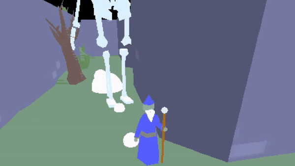

WizMUD
An abandoned MUD (Multi User Dimension), unearthed by hackers in the year 2017 where you play as a wizard in a once lively MMO world. The new tenants of WizMud have taken to tossing priceless artifacts (old junk) from this forgotten MMO into the fishing pond, along with its conventions.
Play Online.
Twitter.



Credits:
Programming: Emmanuel Momot, David Califf
Art: Tyler Cauthen
Sound Design: Tristan Whitehill
Art: Tyler Cauthen
Sound Design: Tristan Whitehill